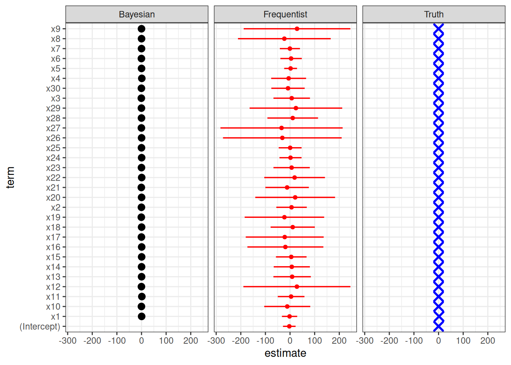
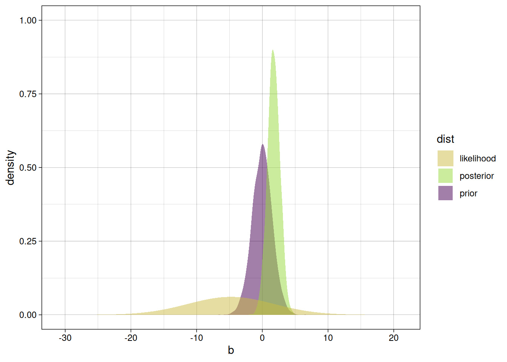
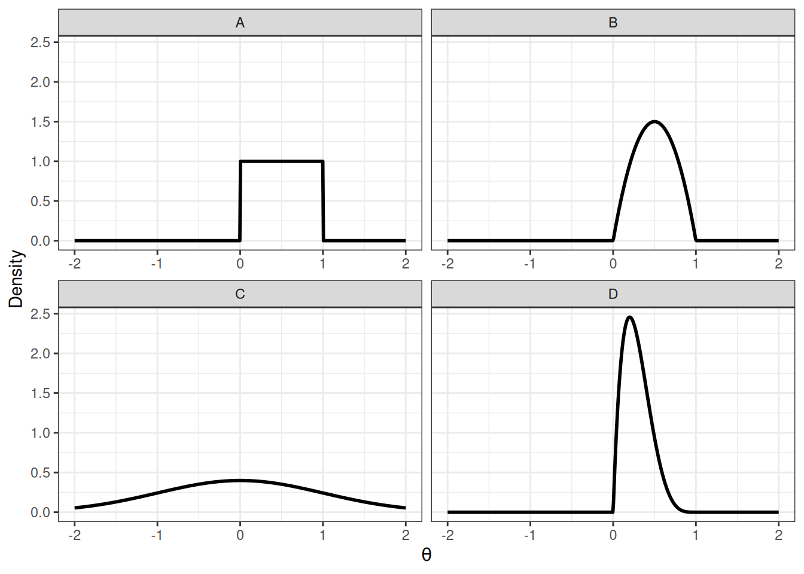
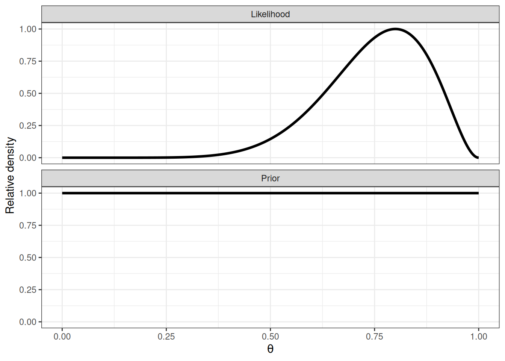
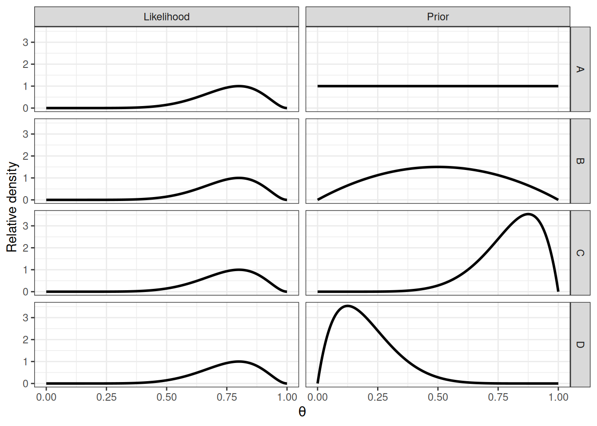
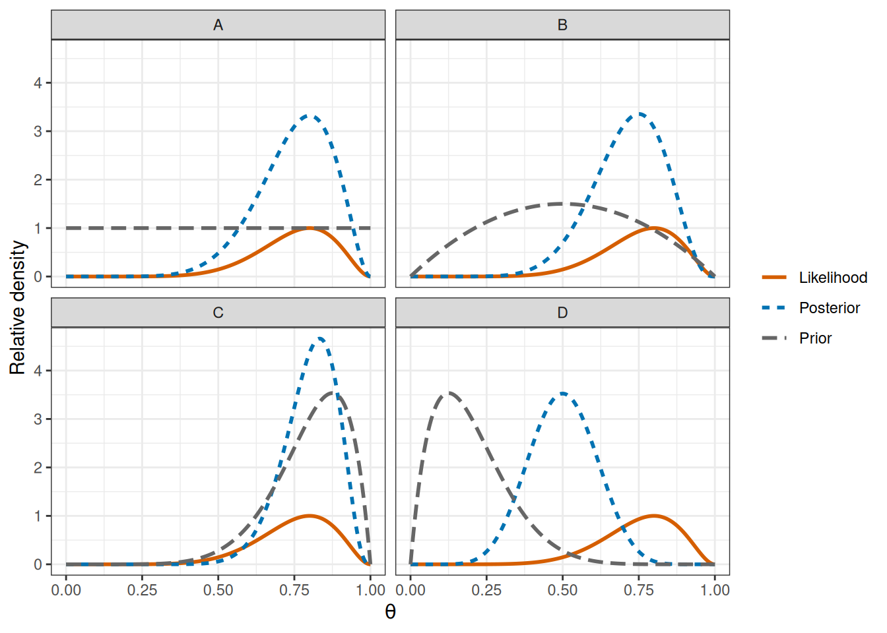

Code
#hereA non-technical introduction to the Bayesian approach
Daniel S. Mazhari-Jensen
May 26, 2026
The slides contain speaking notes that you can view by pressing ‘S’ on the keyboard.
Why do we need a Bayesian approach to regression?
Can’t we just use ordinary least squares?
The answer is not (only):
Bayesian regression stabilizes inference by:
Real regression problems are often weakly identified, noisy, unstable, and geometrically pathological.
Frequentist statistics is by definition neither worse nor better. But the common statistical practice in todays academic publications is often lacking the robustness and explicit interpretation needed to drive home a correct sound and trustworthy interpretation of the estimand.
No! Bayesian and frequentist approaches co-exists. While there has been philosophical debate, the main obsticale for bayesian statsistics was computation power.
Bayesian approaches had gain popularity in AI for techniques such as uncertainty quantification, bayesian optimization, active learning & robotics, time series forecasting, and bayesian deep learning.
The Frequentist approach is often sufficient — and indeed comparable to Bayesian statsistics — when the model is simple and easy to parametrize.
TODO
Show example:
However, for more complex and demanding models, Bayesian approaches allows rigorous and flexible handling of uncertainty, model diagnostics, and parametrization. While a Frequentist approach is nearly always available, it often comes with stricter assumptions and more quirks (which makes solutions less intuitive and unable to transfer to other problems).
GLMs never guarantee a multivariate Gaussian posterior distribution. Thus, quadratic approximation will fail. While this is no issue for MCMC, frequentist always assume this! Therefore, it’s good to know when to expect issues for interpreting other colleagues models!
Suppose we have:
This is extremely common in:
The truth is simple: only one predictor matters:
\[ y = 2x_1 + \epsilon \]
All other predictors have zero effect and all predictors are highly correlated (ρ ~ 0.8). Noise is


This is achieved using regularizing priors.
all prior \(x_n\) is \(\mathcal{N}(0, 1.5),\) The prior intercept is \(mathcal{N}(0, 0.25)\)
So we are vocal about our assumption and expectation that the effect of each x is +-3 95% of the time.
To learn more about how to use the prior, tag along for the following exercises.
The goal of these exercises is to experience the core idea of Bayesian inference:
We start with prior knowledge, collect data, update our beliefs, and use the posterior distribution to answer scientific questions.
You do not need to perform a full Bayesian analysis. The purpose is to understand the logic behind Bayesian inference and how posterior samples can be used.
You have developed a new diagnostic assay.
The assay is designed to detect a pathogen.
Each test gives either:
The unknown parameter is:
\(\theta = P(\text{successful detection})\)
Your goal is to estimate the probability that the assay works.
Before collecting data, you assume that any value between 0 and 1 is equally possible.
Which of the following prior distributions would best fit your hypothesis?

The correct answer is A. This corresponds to:
\(\theta \sim Beta(1,1)\)
or a uniform distribution truncated at 0 and 1.Suppose we observe 8 successes out of 10 trials.
The likelihood for the unknown probability θ is shown below together with the prior from Exercise 1.
Recall that
\(Posterior ∝ Likelihood × Prior\)
For a Beta prior and Binomial data, the posterior is \(θ∼Beta(α,β),\)
\(∼Binomial(n,θ),\)
which gives
\(θ∣y∼Beta(α+y, β+n−y)\)
You are not expected to calculate the posterior. Instead, use the plots to reason about where it should be.

Questions
(Draw it directly on the figure or sketch it on separate axes.)
Compared with the prior, should the posterior
Compared with the likelihood, do you expect the posterior to be
Because the prior is uniform, it gives equal weight to all values of θ. The posterior is therefore largely determined by the likelihood.
The posterior should
In fact,
\(θ∣y∼Beta(9,3)\)Suppose we again observe 8 successes out of 10 trials.
Below are four different prior distributions together with the same likelihood. Each panel represents a different prior belief before the data were collected.
Recall that
\(Posterior ∝ Prior × Likelihood\)

Questions
For each prior (A–D), sketch the posterior distribution.
For a Beta prior,
\(θ∼Beta(α,β),\)
and Binomial data,
\(y∼Binomial(n,θ),\)
the posterior is
\(θ∣y∼Beta(α+y, β+n−y)\)
With y=8 and n=10, the posteriors become
|Prior | Posterior | |A: Beta(1,1) | Beta(9,3) | |B: Beta(2,2) | Beta(10,4) | |C: Beta(8,2) | Beta(16,4) | |D: Beta(2,8) | Beta(10,10) |
The likelihood favors values around \(θ≈0.8\).
The key lesson is that the posterior balances the information from the prior and the observed data. When the prior agrees with the data, the posterior becomes more concentrated. When the prior disagrees with the data, the posterior lies somewhere between the two.
